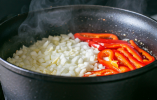
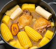

Usaremos una olla grande que llenaremos de aceite para sofreir la cebolla que picaremos, el ajo que tendremos que machacar y el pimentón cortado en tiras hasta que queden dorados y bien sofritos.

Cocción del pollo
Seguiremos cortando el pollo, separando muslos, alitas y filetes (solo usaremos los muslos), continuaremos sellando los muslos en una olla, doraremos por ambos lados dejando el interior poco cocinado.
Preparación del Sancocho
Una vez tenemos los muslos dorados, y las verduras sofritas, debemos mezclar en una olla a presion el sofrito con agua y los trozos de pollo en el caldo a fuego bajo. Mientras cortaremos el platano, la patata y la yuca en trozos y las añadiremos a la olla junto con las mazorcas enteras.
Subimos fuego a nivel medio durante dos horas y nuestro sancocho estara listo para ser disfrutado.

Condimentos
No olvides añadir sal y cilantro a tu gusto, y si gustas picante.